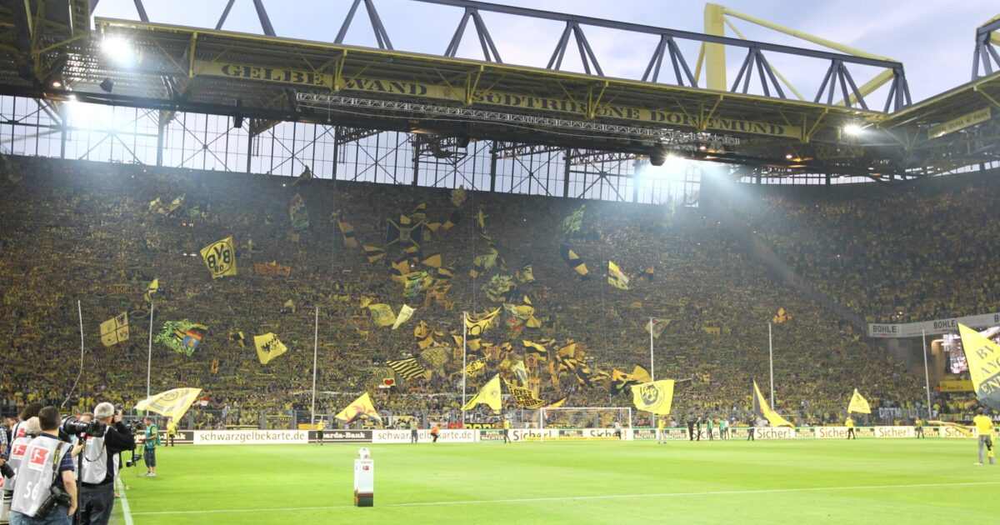
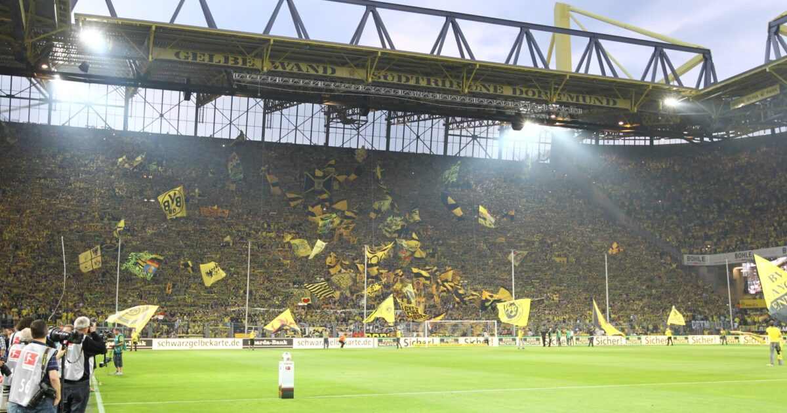

The Best Stadiums in Europe
This website is here to inform fellow football fans about the best football stadiums to visit across Europe. It was developed by Louis Gazo. Louis has played different levels of professional football, traveled throughout Europe with a football club, and experienced a few different stadiums that are listed on this webpage. If you are looking to travel or want to incroprate the beautiful game into your plans, consider this webpage. Stadiums are as much artowrk and culture as they are a sporting event. It is very different than the United States as clubs take great pride in this meeting ground. Stadiums have become the modern city center and a place where community and cultures meet.

 
